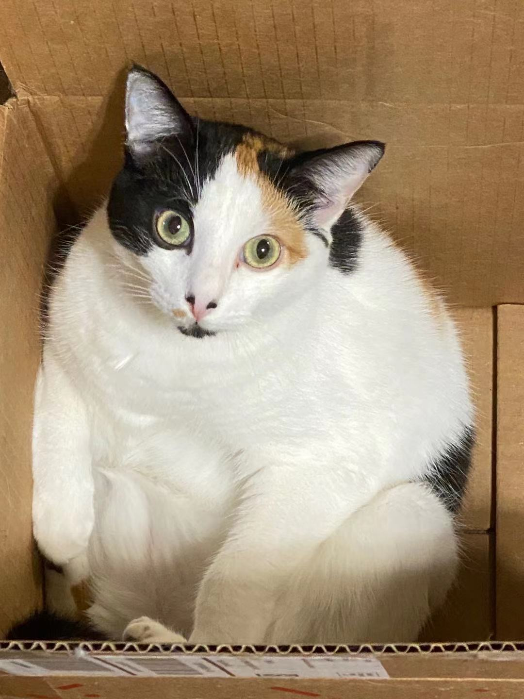
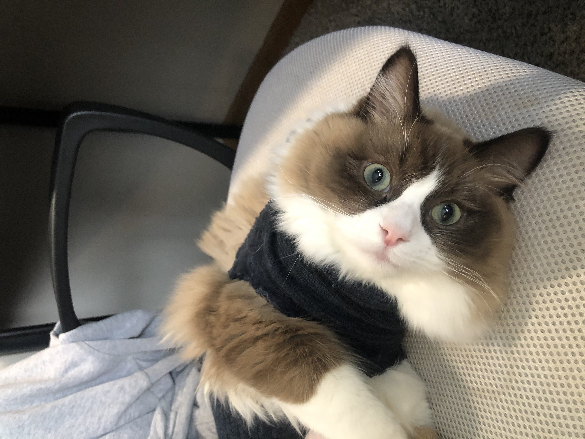

I have a one-year old calico cat named Huahua(we call her Guapi, which means idiot, behind her back) and a 9-month old chocolate color ragdoll named Fugui(we call her Laba, which means trumpet, behind her back. Because she is a super loud speaker.)
Guapi is very smart and used to be tiny and cute. She learned lots of tricks when she was a kitten. But now Guapi is just a 12lbs lazy young lady, who will remind you every morning and evening that it is time for food and only perform the tricks she learned when there are dry shrimps (Yes, she will ignore you/pretend to be deaf when you only have “normal” type treats).
Fugui is still a kitten, however she is already 11lbs. She is the biggest kitten, almost as twice as other kittens, when we first pick up from the breeder. I am afraid that she will grow to be the size of a giant male ragdoll. Fugui is polite and won’t be a alarm clock as Guapi do when it is time for food. However, she seems to like talking to herself loudly when playing and using the litter box. 